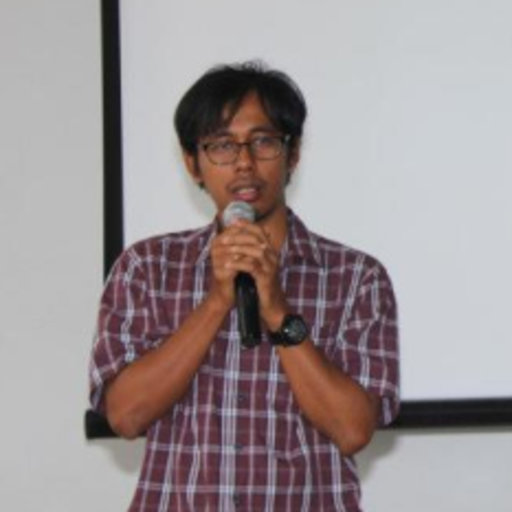

Department of Marine Science · Universitas Padjadjaran
“A smooth sea never made a skilled sailor.”
— F.D. Roosevelt
Associate Professor at Universitas Padjadjaran specializing in Physical Oceanography and Applied Ocean Sciences. Sixteen years of field, laboratory, and computational research spanning water mass dynamics, marine debris tracking, and low-cost ocean monitoring technology across the Indonesian Seas and Southeastern Indian Ocean.
Founder of KomitmenX Research Group and Padjadjaran Oceanographic Data Centre (PODC), endorsed by UNESCO. Instruments deployed across Fiji, Germany, Malaysia, and the Philippines. Visiting Scientist at the Institute of Oceanology, Chinese Academy of Sciences (2026).
Four interconnected domains spanning field observation, instrument engineering, data science, and policy-relevant environmental science.
Water mass dynamics, ocean circulation, and current systems in the Indonesian Seas, Banda Sea, and Southeastern Indian Ocean — from in-situ CTD campaigns to multi-decadal historical analysis.
Mapping debris trajectories across Indonesian boundary seas using Lagrangian particle modeling, GPS drifter data, and field sampling. Informing national and ASEAN-level policy.
Engineering RHEA, ClimBoX, and NOaBox — affordable, multi-parameter ocean monitoring instruments designed for archipelagic and island nations with limited resources.
Multi-decadal ocean heat content trends, sea level rise, and open data infrastructure. Founder of PODC — Indonesia's first UNESCO-endorsed ocean data portal.
Four hardware and data systems developed since 2016, deployed internationally and recognized at national and UNESCO levels.
A 1-meter, 15 kg autonomous ocean drifter with GPS, satellite telemetry, and customizable sensor payloads — measuring temperature, salinity, pH, dissolved oxygen, turbidity, and current velocity. Transmits real-time data to PODC via satellite. Deployed across Indonesia, Philippines, Fiji, and Germany.
An integrated multi-parameter sensor system for continuous climate change monitoring in coastal and marine protected areas. Supports SDG 13 and SDG 14. Funded by the Ministry of Higher Education, Research, and Technology.
Indonesia's open ocean data portal, aggregating and visualizing real-time oceanographic data from RHEA/ARHEA deployments and partner networks. Endorsed by UNESCO under the UN Decade of Ocean Science 2021–2030.
A low-cost, automatic IoT-based marine monitoring instrument engineered for archipelagic deployment. The NOABOX-JB West Java variant was developed under the In-Jabar Government Grant (2024).
71 peer-reviewed articles. Selected Q1 and Q2 journals shown.
National and international recognition for research, innovation, and science communication.
Six major research cruises spanning the Indonesian Seas, North Atlantic, and the Indo-Pacific.
Active research partnerships across 11 countries spanning Europe, Asia, Oceania, and Southeast Asia.
Seven universities across Indonesia and Malaysia. Head of Doctoral Study Programme, Sustainable Fisheries and Oceans at Universitas Padjadjaran.
Four volumes published by Unpad Press, covering oceanographic dynamics, marine technology, and island ecosystems.
Available for consulting engagements in ocean science, marine technology, and environmental policy. Sixteen years of applied research experience across Indonesia, Southeast Asia, and international collaborations.
Request a ConsultationSubmit requests for thesis supervision, research title proposals, or internship applications. Responses are typically sent within 1 to 3 business days.
Open to research collaborations, media inquiries, speaking invitations, and consulting engagements in ocean science and marine technology.